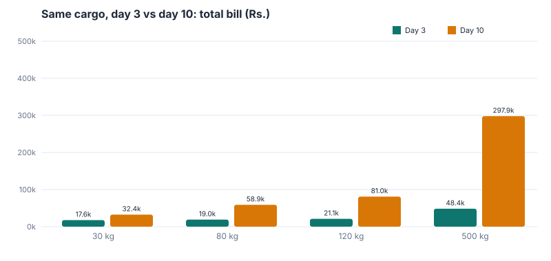

Guide
How to Choose a Customs Clearing Agent You Can Trust
Eight questions to ask and the red flags that cost importers money.
Eight questions to ask and the red flags that cost importers money.

Your clearing agent decides how fast your cargo moves. A good agent files accurately, follows up quickly and keeps you informed. A poor one adds days to the process, and every extra day in the godown has a cost. This guide helps you choose carefully, whether you are importing for the first time or looking to change.
On 80 kg of general cargo, clearing on day 3 costs Rs. 18,958 in operator charges in our calculator. Clearing on day 5 costs Rs. 24,662. A slow agent that adds two days costs you Rs. 5,704 more, even if their professional fee is lower than a competitor's. Speed is worth paying for.

| Item | What to ask | Why |
|---|---|---|
| Professional fee | Fixed or percentage? | A percentage can reward higher declared values, not better service |
| Operator charges | Passed at actual cost? | Ask for the operator's receipt for every charge |
| Examination charges | Included or extra? | Labour and handling can add up |
| Transport | Arranged by agent? | Late trucks cause extra storage days |
| Payment terms | Advance or after? | Large advances increase your risk |

Share documents early and in one batch. Tell the agent about the permit status. Pay their advance promptly. Ask for a short update at each stage: filing, assessment, payment, examination, delivery order and gate-out. And use our calculator to give them a realistic budget for the operator's charges, so no one is surprised.
| Criterion | Weight | Score 1–5 |
|---|---|---|
| Speed of filing | 30% | __ |
| Communication | 25% | __ |
| Experience with your cargo type | 20% | __ |
| Fee transparency | 15% | __ |
| References | 10% | __ |
Multiply each score by its weight and add the results. Compare two or three agents on the same shipment rather than on promises.
If you are unsure, give a new agent a single small shipment. Track how many days each step took and compare the final bill with your estimate. A low-risk trial tells you more than any sales pitch.
Registered importers can file directly, but it needs knowledge of the customs system, classification and procedure. Most use an agent.
A single agent who knows your products usually works faster, but you can compare agents on a few shipments.
Document it in writing and check your agreement. Some mistakes can be corrected through amendments.
Rarely. Compare speed, communication and reliability along with fees.
It is possible but can cause delays. Settle the original agent's dues and obtain the documents before switching.